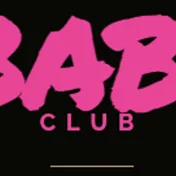
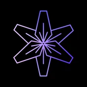

Techno · Deep House · Disco
Lost Paradise by Bouillotte Klub
الجمعة، 13 نوفمبر
إلكترو خيالي مع غروب الشمس في الأجواء التاريخية لـ Fort Napoléon.
الليلة
سهرات الليلة والنوادي الليلية والبارات المفتوحة حالياً في Côte d'Azur وVar، بتحديث مباشر.
Techno · Deep House · Disco
الجمعة، 13 نوفمبر
إلكترو خيالي مع غروب الشمس في الأجواء التاريخية لـ Fort Napoléon.
الجمعة، 13 نوفمبر
Sélections de la saison 5 du concours drag au Swing avec show et DJ set.
Afro House · House · Club
الجمعة، 13 نوفمبر
مزيج من الدرامز اللايف وكلوبينغ شيك، شرقي وأفرو هاوس قبالة البحر في Antibes.
Funk · Pop
الجمعة، 13 نوفمبر
لايف مليان طاقة مع بوب فيوجن وworld grooves في Quartier du Poulpe لبداية الويكند.
RnB · Pop
الجمعة، 13 نوفمبر
حفل إطلاق EP HEAL للفنان Yona في شوكيس حصري ومجاني في Frigo 16.
Pop
الجمعة، 13 نوفمبر
Rencontre pop et classique entre Arthur H et Vanessa Wagner en entrée libre.
Électro
الجمعة، 13 نوفمبر
Crête & Moustache وسهرة ساوند سيستم داب حماسية بستايل كلوب في Le Live.
الجمعة، 13 نوفمبر
بيفور أندرغراوند يركز على أصوات برلين والـ UK bounce في Vieux-Nice.
House · Hip Hop · Électro
الجمعة، 13 نوفمبر
جولة البارات اللي ما تتفوتش في Nice: أربع بارات وشوتس مشمولة ودخول VIP للكلوب.
Disco · Électro
الجمعة، 13 نوفمبر
سهرة الجمعة 13 مع دريس كود أخضر ودي جي سيت حماسي من DJ Sylvain P على مساحة 600 متر مربع.
Électro · Pop · Club
الجمعة، 13 نوفمبر
جولة على بارات Vieux-Nice الرهيبة مع شوتس مجانية وخاتمة سهرة في نايت كلوب.
Trance · Techno
الجمعة، 13 نوفمبر
ريف تكنو ضخم وبيتات سريعة على الواجهة البحرية في Fréjus Plage.
مطلوبة جدًا
Shatta · Reggaeton · Latino
الجمعة، 13 نوفمبر
ليلة لاتينو وكلوبينغ نارية مع ريغيتون وبيريو لحد 4 الصبح في Frigo 16.
Amapiano · Afro · Shatta
الجمعة، 13 نوفمبر
السهرة الرسمية لـ Afroheat Festival مع DJ Mapouia وBlack Q وLil Big في 305 Vice.
Hard Techno · Industrial · Techno
الجمعة، 13 نوفمبر
ريف جنوني حتى الفجر في معقل الهارد تكنو بمنطقة فار.
Tech House · Deep House · House
الجمعة، 13 نوفمبر
سهرة 100% هاوس ميوزك على طريقة الـ boiler room وبسعر رمزي.
Tech House · House · Club
الجمعة، 13 نوفمبر
أجواء كلوبينغ رايقة وأنغام هاوس في قلب منطقة المشاة بنيس.
مطلوبة جدًا
Afro House · Tech House · Deep House
الجمعة، 13 نوفمبر
المنتج Malive في دي جي سيت أفرو هاوس وتيك هاوس في Twiga Monte Carlo.
Deep House · House · Indie
الجمعة، 13 نوفمبر
B2B حصري بين Chris.A وUgo Puccinelli في Glass Club Cannes.
House · Shatta · Reggaeton
الجمعة، 13 نوفمبر
أجواء حارة وولعانة على الـ Promenade مع السهرة الأقوى للريغيتون والشاتا.
Afro House · Tech House · House
الجمعة، 13 نوفمبر
النسخة الأولى من كونسيبت Nightly مع Dovnrobs في ELVA Club بـ Cannes.
Shatta · Dancehall
الجمعة، 13 نوفمبر
ليلة مولّعة في Cannes مع DJ Mygo وDJ Iron على الميكسر لأقوى إيقاعات الدانسهول والشاتا.
Hard Techno · Techno
السبت، 14 نوفمبر
أفتر بارتي من 5 الفجر مع Pitch One، أسطورة الفينيل وأحد رواد Trakkass.
السبت، 14 نوفمبر
ساوند سيستم 25 كيلوواط ولايف ماشين احترافي بموقع سري.
Minimal · Techno · Tech House
السبت، 14 نوفمبر
سهرة ديب تكنو وتيك من توقيع Club Bizarre وSensoria في البراسيري النيسية.
Afro House · House · Latino
السبت، 14 نوفمبر
إعادة افتتاح Auberge Tao بأجواء رايقة مع سيت أفرو ولاتينو هاوس من تقديم Aaron.
Électro
السبت، 14 نوفمبر
Tartiflette maison et sélection musicale par DJ Stiff place de l'Équerre.
Électro · Pop · Indie
السبت، 14 نوفمبر
الثنائي الأيقوني صاحب أغنية Prayer in C في لايف حصري وحميمي في Mas d'Hiver.
مطلوبة جدًا
Hard Techno · Industrial · Trance
السبت، 14 نوفمبر
Caravel يشعل الأجواء بالهارد تكنو والترانس حتى 4 الفجر في Frigo 16.
Pop · Indie · Club
السبت، 14 نوفمبر
أربع فرق بانك روك وغاراج على مسرح MJC Picaud بـ 10 يورو فقط.
Dancehall · RnB · Pop
السبت، 14 نوفمبر
سهرة احتفالية مليانة جليتر مع سوشي، تاتو وستاندات ميك آب.
House · Disco · Électro
السبت، 14 نوفمبر
ميني بويلر روم مع الدي جي في منتصف الكلوب وسيتات هاوس، ديسكو وبوب.
Afro
السبت، 14 نوفمبر
لايف ريغي وإيقاعات أفريقية مع Rasjah Music عشان يولّعوا الجو في Nice.
مطلوبة جدًا
Hip Hop · Rap · RnB
السبت، 14 نوفمبر
أسطورة الـ DJing في الهيب هوب Cut Killer يولّع ويكند افتتاح ORA.
Ce soir, aucune soirée annoncée à : les boîtes et bars ouverts sont juste en dessous, ou choisis une ville voisine.
ما في سهرات معلنة لليلة حتى الآن: شيك على الأماكن المفتوحة تحت، أو شوف جدول الأيام الجاية. كل الحفلات
المواعيد مأخوذة من المصادر الرسمية للأماكن (الموقع، Instagram، صفحة Google). وممكن تتغير، خصوصاً في العطلات: إذا مو متأكد، شيك على حسابهم على Instagram قبل ما تروح.

كلوب · Nice
كلوب كبير ومتنوع في Promenade des Anglais يضم عدة قاعات مع برامج EDM، موسيقى أوربان وDJ sets عالمية.
تم جمع المعلومات في 9 نوفمبر · المصدر
Latin AddictI'm Not Rich But I'm HighStudents Party @ High Club

كلوب · Toulon الشركاء
سبوت ليلي يجمع بين مطعم سهرات، بار كوكتيلات، كاريوكي وكلوب، ومفتوح كل ليلة.
تم جمع المعلومات في 13 نوفمبر · المصدر
Urban ShattaBefore Pacific Neon NightZouk Love Toulon Edition Chic

Pub · Nice
بوب أنغلوفوني بأجواء حماسية مشهور بحفلات البوب-روك اللايف والرقص على الطاولات.
تم جمع المعلومات في 10 نوفمبر · المصدر

بار · Mandelieu-la-Napoule الشركاء
حانة إيرلندية وبار ليلي عالبحر مباشرة، يقدّم وجبات، بث للمباريات الرياضية، DJ sets وحفلات لايف.
تم جمع المعلومات في 13 نوفمبر · المصدر

Pub · Mandelieu-la-Napoule
حانة إيرلندية واسعة على الميناء تتحوّل في السهرة لنايت كلوب مع سيتات دي جي وسهرات بثيمات مختلفة.
تم جمع المعلومات في 10 نوفمبر · المصدر

كلوب · Nice الشركاء
غرفة تبريد سابقة تحولت لقاعة حفلات ومساحة كلوبينغ داخل Le 109. المكان يستضيف سهرات إلكترو، تكنو، هيب هوب وفعاليات بديلة.
تم جمع المعلومات في 13 نوفمبر · المصدر
YONA – LQB Session #6Jetlag Gang (+ Opening Act)Caravel (+ No2theG, May-Li)

بار · Nice الشركاء
ديسكو أندرغراوند تحت قبو تاريخي في Vieux-Nice، فيه حلبة رقص مشتعلة لآخر الليل مع DJ sets متنوعة وإلكترونية وخدمة بار مميزة.

كلوب · Monaco
نادٍ ليلي أيقوني في الهواء الطلق حول بحيرة شاطئية مع عروض DJ عالمية لموسيقى EDM وHouse وHip-Hop.
تم جمع المعلومات في 9 نوفمبر · المصدر

بار · Nice الشركاء
يشتهر هذا البار الحيوي في الطابق الأرضي بتشكيلته الواسعة من الجين، وكوكتيلاته المبتكرة، وتنويعات السبريتز. ويوفّر أجواء مريحة لكأس قبل ما تكمل السهرة.


بار · Nice الشركاء
Le Swing هو بار-كباريه gay-friendly يقدّم كوكتيلات ووجبات خفيفة، مع فعاليات ترفيهية متل الكاريوكي، البينغو وعروض drag-queens.
تم جمع المعلومات في 13 نوفمبر · المصدر

روف توب · Beausoleil
روف توب بإطلالة خيالية على الإمارة، مثالي لمشاركة الـ pinsa والاستمتاع بسيتات دي جي لاونج وبوب.
تم جمع المعلومات في 10 نوفمبر · المصدر

بار · Monaco
مطعم احتفالي وبار ليلي يقدم حفلات حية تتبعها DJ sets متواصلة حتى مطلع الفجر.
تم جمع المعلومات في 9 نوفمبر · المصدر

بار كوكتيل · Monaco
بار لاونج مع تراس مطل على البحر، يقدم كوكتيلات وأجواء موسيقية هادئة مع nu-disco وchill-house.
تم جمع المعلومات في 10 نوفمبر · المصدر

كلوب · Cannes الشركاء
نادٍ ليلي في Cannes يضمن لك سهرات حتى الصباح مع مساحات VIP وخدمة طاولات. جلسات الكلوبينغ تستضيف عروض DJ بموسيقى House وEDM وHip-Hop وأحدث الأغاني الضاربة.
تم جمع المعلومات في 13 نوفمبر · المصدر

بار · Toulon الشركاء
بار حيوي يستضيف حفلات غنائية، وعروض ستاند أب، ومسابقات blind test، ويقدم بيرة حرفية وكوكتيلات وأطباقاً للمشاركة.
تم جمع المعلومات في 13 نوفمبر · المصدر

كلوب · Nice الشركاء
بار سهرة وديسكو معروف في Vieux-Nice مفتوح حتى الصباح الباكر، بأجواء شبابية وسهرات طلابية مع دي جي سيتس منوعة.
تم جمع المعلومات في 13 نوفمبر · المصدر

بار · Monaco
بار موسيقي في port Hercule يستضيف حفلات لايف ثم عروض DJ حتى الـ 4 فجراً.
تم جمع المعلومات في 10 نوفمبر · المصدر

Beach club · Golfe-Juan
مكان على البحر بديكور بالي يقدّم كوكتيلات، حفلات شاطئية وسيتات دي جي أفرو هاوس وديسكو هاوس.
تم جمع المعلومات في 10 نوفمبر · المصدر

كلوب · Monaco
مكان سهر على شاطئ البحر يجمع بين مطعم وبار لاونج ونادٍ ليلي على إيقاعات Afro-house وHouse.
تم جمع المعلومات في 9 نوفمبر · المصدر

كلوب · Cannes الشركاء
بار سهرات وميني كلوب ليلي يقدم كوكتيلات وخدمة طاولات حتى الصباح. البرنامج الموسيقي يشتعل مع DJ sets بين Afro House وHip-Hop وShatta وDeep House.
تم جمع المعلومات في 13 نوفمبر · المصدر
Caribbean MoodThe Best or NothingLa Wave - "Shatta Séduction" - Cannes

بار · Toulon الشركاء
حانة وبار كوكتيلات بأجواء حقبة حظر الكحول، مع تراس، وجبات خفيفة وصالة ألعاب في الدور اللي فوق.
تم جمع المعلومات في 13 نوفمبر · المصدر

بار · Toulon الشركاء
حانة ومكان متخصص بالـ rhum بأجواء بحرية، يقدم rhum بنكهات منزلية، وبيرة، وكوكتيلات في مواجهة الميناء.
تم جمع المعلومات في 13 نوفمبر · المصدر
Soirée France / Afrique du SudKaraoké et match France / Turquie

روف توب · Nice
روف توب مليان نباتات يقدّم مقبلات متوسطية وكوكتيلات مبتكرة بأجواء لاونج احتفالية.
تم جمع المعلومات في 13 نوفمبر · المصدر

كلوب · Nice
كلوب أندرغراوند بأجواء مميزة وخاصة لعشاق الموسيقى الإلكترونية، المينيمال تكنو والدارك تكنو.
تم جمع المعلومات في 10 نوفمبر · المصدر
بار كوكتيل · Nice
بار كوكتيل من طابقين بإطلالة عالبحر مع أجواء راقصة على أنغام الهاوس والفانك.
تم جمع المعلومات في 10 نوفمبر · المصدر
بار كوكتيل · Nice
بار كوكتيل عالميناء مستوحى من الـ speakeasy مع ميكسات هيب هوب، R&B وأغاني متنوعة.
تم جمع المعلومات في 10 نوفمبر · المصدر

Beach club · Nice الشركاء
بيتش كلوب ينظم سهرات أفتر وورك رايقة على الشاطئ مع DJ sets ديب هاوس في الصيف.
تم جمع المعلومات في 10 نوفمبر · المصدر

روف توب · Villefranche-sur-Mer
روف توب بإطلالة بانورامية على الخليج، يقدم كوكتيلات مبتكرة وأجواء موسيقية راقية.
تم جمع المعلومات في 10 نوفمبر · المصدر
بار كوكتيل · Villefranche-sur-Mer
مكان تريندي على شاطئ البحر يجمع بين فن خلط الكوكتيلات، وستريت فود عالمي، وأجواء موسيقية إيقاعية.
تم جمع المعلومات في 10 نوفمبر · المصدر
Beach club · Villefranche-sur-Mer
شاطئ خاص موسمي رائع للاسترخاء على ضفاف الماء على أنغام موسيقى electro-lounge.
تم جمع المعلومات في 13 نوفمبر · المصدر

بار · Saint-Laurent-du-Var
بار ليلي في مارينا اليخوت يضم حلبة رقص وDJ sets بأغانٍ تجارية، وهيب هوب، وreggaeton.
تم جمع المعلومات في 10 نوفمبر · المصدر

Pub · Saint-Laurent-du-Var
حانة بحرية بأجواء غير رسمية تقدم بيرة درافت وبثاً للمباريات مع نهاية سهرة حماسية.
تم جمع المعلومات في 10 نوفمبر · المصدر
بار · Saint-Laurent-du-Var
مكان سهرات على البحر يستضيف ليالي مشتعلة مع DJ sets لموسيقى house، ولاتينو، وموسيقى عامة.
تم جمع المعلومات في 10 نوفمبر · المصدر
Pub · Cagnes-sur-Mer
حانة كبيرة وعصرية تقدّم بيرة، وبث مباشر للمباريات، وسهرات دي جي بثيمات حماسية في الويكند.
تم جمع المعلومات في 10 نوفمبر · المصدر

Beach club · Cagnes-sur-Mer
بيتش كلوب وبار لاونج على شاطئ البحر يقدّم تاباس وكوكتيلات على أنغام الديب هاوس مع الغروب.
تم جمع المعلومات في 10 نوفمبر · المصدر
Beach club · Cagnes-sur-Mer
شاطئ خاص بأجواء رايقة في Cros-de-Cagnes لتشرب كاس في الهواء الطلق بفايب لاونج هادئ.
تم جمع المعلومات في 10 نوفمبر · المصدر
كلوب · Cannes
Club du groupe Barrière perché au-dessus du Casino Barrière Le Croisette, au Palais des Festivals : déco seventies, house et disco, terrasse avec vue sur le port.
تم جمع المعلومات في 13 نوفمبر · المصدر

بار كوكتيل · Cannes
بار كوكتيل وكلوب دافئ في Carré d'Or يقدّم كوكتيلات حصرية وDJ sets إلكترو وتيك هاوس.
تم جمع المعلومات في 10 نوفمبر · المصدر
Friday Connection — Chris.A B2b Ugo PuccinelliLizzie & Friends — Saturday House SessionAlex Duff Into The Night
Pub · Cannes
بوب إيرلندي ولاونج مفضل عند الطلاب، يجمع بين حفلات الروك اللايف وسهرات الرقص مع الدي جي.
تم جمع المعلومات في 10 نوفمبر · المصدر
بار · Cannes
بار احتفالي داخل قبو مقوس في Suquet، الرقص فيه شغال على أشهر الهيتس والريغيتون.
تم جمع المعلومات في 10 نوفمبر · المصدر
روف توب · Cannes
روف توب بإطلالة بانورامية على Vieux-Port، يقدم كوكتيلات مبتكرة في أجواء موسيقية رايقة مع ديب هاوس (deep house).
تم جمع المعلومات في 10 نوفمبر · المصدر

Beach club · Cannes
شاطئ خاص بأجواء احتفالية في La Croisette، على وقع DJ sets صيفية، وموسيقى disco-house وأشهر الأغاني المنوعة.
تم جمع المعلومات في 9 نوفمبر · المصدر
كلوب · Juan-les-Pins
مجمّع ليلي بديكور استوائي محبوب جداً للي أعمارهم بين 18 و25 سنة بفضل سهراته بأغاني تجارية وموسيقى أوربان.
تم جمع المعلومات في 10 نوفمبر · المصدر
كلوب · Juan-les-Pins
نايت كلوب يركّز على الموسيقى الحضرية مع سيتات راب، أفروبيت، شاتا وإلكترو.
تم جمع المعلومات في 10 نوفمبر · المصدر
بار كوكتيل · Juan-les-Pins
بار كوكتيلات استوائية أيقوني مشهور بعروض الرقص البرازيلي وأجوائه الكرنفالية المجنونة.
تم جمع المعلومات في 10 نوفمبر · المصدر
Pub · Antibes
حانة نابضة بالحياة بجانب الأسوار القديمة، تقدم تشكيلة بيرة متنوعة على إيقاع الحفلات وعروض الـ pop-rock.
تم جمع المعلومات في 10 نوفمبر · المصدر
بار · Antibes
بار سهرات في Antibes القديمة، مفضل في نهاية الليل للبيرة درافت والشوتات مع بلايليست روك وأغانٍ منوعة.
تم جمع المعلومات في 10 نوفمبر · المصدر

بار · Antibes
قبو مقوس مميز لتذوق شراب الـ absinthe التقليدي وسط أجواء بيانو بار كلاسيكية.
تم جمع المعلومات في 10 نوفمبر · المصدر

بار كوكتيل · Le Cannet
بار لاونج بتراس بانورامي على مرتفعات Cannet القديمة للاستمتاع بالكوكتيلات وقت الغروب.
تم جمع المعلومات في 10 نوفمبر · المصدر
كلوب · Monaco
كلوب يقع في port Hercule، وجهة مفضلة للشباب بفضل أجوائه الحماسية على إيقاعات mix إلكترو، وتجاري، وreggaeton وhip-hop.
تم جمع المعلومات في 10 نوفمبر · المصدر
Pub · Monaco
مصنع بيرة حرفي صغير على الميناء مع شاشات للمباريات الرياضية وعروض DJ تجارية في المساء.
تم جمع المعلومات في 10 نوفمبر · المصدر

روف توب · Monaco
روف توب فوق Café de Paris بديكورات مستوحاة من الغابة، يقدم كوكتيلات مبتكرة وموسيقى deep house بنغمات استوائية.
تم جمع المعلومات في 10 نوفمبر · المصدر

Beach club · Monaco
بيتش كلوب في الطابق السابع حول المسبح مع عروض house يقدمها DJ مقيمون.
تم جمع المعلومات في 10 نوفمبر · المصدر

بار كوكتيل · Beausoleil
بار تاباس وكوكتيلات بأجواء دافئة ينظّم سهرات بثيمات منوعة، وحفلات أكوستيك وموسيقى لاتينية.
تم جمع المعلومات في 10 نوفمبر · المصدر
Pub · Beausoleil
حانة حي رايقة تقدّم بيرة حرفية مع بث مباشر للماتشات على أنغام الروك.
تم جمع المعلومات في 10 نوفمبر · المصدر

بار · Menton
بار سهرات على الواجهة البحرية يجمع شباب المنطقة على وقع DJ sets لموسيقى reggaeton، وإلكترو، وأغاني تجارية.
تم جمع المعلومات في 10 نوفمبر · المصدر

Pub · Menton
حانة تحت الأقواس مقابل البحر تقدم بيرة درافت، وبثاً للمباريات، وحفلات حية وعروض pop-rock.
تم جمع المعلومات في 10 نوفمبر · المصدر

لاونج · Menton
مطعم وبار لاونج على شاطئ البحر يقدم تاباس، وكوكتيلات مبتكرة، وسهرات تشعلها DJ sets house.
تم جمع المعلومات في 10 نوفمبر · المصدر
بار كوكتيل · Menton
بار دافئ في الميناء القديم (Vieux-Port) متخصص في الـ rhum المنكّه على إيقاعات استوائية، وفانك، ولاتينو.
تم جمع المعلومات في 10 نوفمبر · المصدر
روف توب · Menton
بار في الطابق السابع بإطلالة بانورامية يقدم كوكتيلات وتاباس في أجواء تشيل آوت مريحة.
تم جمع المعلومات في 10 نوفمبر · المصدر
كلوب · Toulon
كلوب كلاسيكي يقدم سهرات afterwork، وكاريوكي، وسهرات كلوبينغ حماسية بإيقاعات منوعة وعصرية ولاتينية.
تم جمع المعلومات في 10 نوفمبر · المصدر
Urban ShattaBefore Pacific Neon NightZouk Love Toulon Edition Chic
كلوب · Toulon
ديسكو في وسط المدينة بأجواء حماسية وعروض drag shows وعروض DJ لموسيقى house وélectro وpop.
تم جمع المعلومات في 10 نوفمبر · المصدر

بار · Toulon الشركاء
بار سهرات في Mourillon يقدم بيرة وكوكتيلات مع DJ sets وموسيقى لايف.
تم جمع المعلومات في 10 نوفمبر · المصدر
Pub · Toulon
حانة بلمّة حلوة تقدم بيرة حرفية، وبطولات دارتس، وبيتزا، وعروض DJ في عطلة نهاية الأسبوع.
تم جمع المعلومات في 10 نوفمبر · المصدر
بار كوكتيل · Toulon
بار كوكتيلات بستايل speakeasy مشهور بابتكاراته في الكوكتيلات وأجوائه الهادئة والخاصة.
تم جمع المعلومات في 10 نوفمبر · المصدر

روف توب · Toulon
روف توب مع مسبح صغير وإطلالة على أسطح المدينة، مثالي لجلسات المشروبات وقت غروب الشمس.
تم جمع المعلومات في 10 نوفمبر · المصدر

كلوب · La Seyne-sur-Mer
كلوب ليلي ينظّم سهرات ثيمية على إيقاعات الموسيقى الحضرية، الأفرو، الأمابيانو والإلكترو.
تم جمع المعلومات في 10 نوفمبر · المصدر

بار · Hyères
بار احتفالي ومطعم بأجواء ولا أروع على الميناء، يقدّم كوكتيلات وبرامج موسيقية تجمع بين البوب، الفانك والهاوس.
تم جمع المعلومات في 10 نوفمبر · المصدر

Beach club · Hyères
مكان سهر على البحر معروف بحفلات الشاطئ وسهراته المولعة بسيتات دي جي إلكترو.
تم جمع المعلومات في 10 نوفمبر · المصدر

بار كوكتيل · Hyères
بار أفتروورك على الميناء مع تراس لتذوّق بيرة محلية وسوشي والاستمتاع بسيتات دي جي.
تم جمع المعلومات في 10 نوفمبر · المصدر

Pub · Six-Fours-les-Plages
حانة حماسية مع بيرة، برغر، بث للمباريات وحلبة رقص مشتعلة بسهرات دي جي أو SBK.
تم جمع المعلومات في 10 نوفمبر · المصدر
بار · Six-Fours-les-Plages
بار على الواجهة البحرية يستضيف حفلات لايف، سهرات بثيمات متنوعة وأجواء رقص حماسية.
تم جمع المعلومات في 10 نوفمبر · المصدر

Beach club · Sanary-sur-Mer
مكان يطل على شاطئ Portissol يقدّم كوكتيلات مبتكرة وسيتات دي جي إلكترو وديب هاوس.
تم جمع المعلومات في 10 نوفمبر · المصدر
Beach club · Sanary-sur-Mer
تراس مميز فوق الصخور يقدّم أطباقاً للمشاركة، موسيقى صيفية مبهجة وجلسات أبيرو في مواجهة البحر مباشرة.
تم جمع المعلومات في 10 نوفمبر · المصدر

كلوب · Bandol
ريستو-كلوب يقدّم وجبات عشاء، مسابقات بلايند تست وحلبة رقص مشتعلة بأغاني البوب الكلاسيكية وأقوى الهيتس الحالية.
تم جمع المعلومات في 10 نوفمبر · المصدر
لاونج · Bandol
بار بأجواء حميمية وتراس بانورامي يطل على خليج Renécros، مثالي لكاس رايق على أنغام موسيقى لاونج.
تم جمع المعلومات في 11 نوفمبر · المصدر
بار كوكتيل · Bandol
بار على الميناء يقدّم كوكتيلات مبتكرة وتاباس وسط أجواء موسيقية احتفالية.
تم جمع المعلومات في 11 نوفمبر · المصدر

بار · Cannes الشركاء
حانة وبار ليلي على الطراز الأمريكي يقدم برغر، وبيرة، وكوكتيلات، وألعاب مثل البلياردو والدارتس والفوسبول. الأجواء شبابية وعفوية مع بث للمباريات وDJ sets حتى الـ 5 صباحاً.
تم جمع المعلومات في 11 نوفمبر · المصدر

بار · Cannes الشركاء
بار ليلي أنيق ودافئ يقدّم كوكتيلات مبتكرة ومشروبات مميزة. يضم المكان تراساً ويقدّم سهرات مميزة مع دي جيز حتى 2:30 فجراً.
تم جمع المعلومات في 11 نوفمبر · المصدر

بار · Cannes الشركاء
يقدّم هذا المكان الاحتفالي كوكتيلات مبتكرة وأكلات متوسطية مثل البينسا والبيتزا للمشاركة. وتتصاعد الأجواء خلال السهرة مع دي جي وموسيقى حماسية.
تم جمع المعلومات في 13 نوفمبر · المصدر


بار · Nice الشركاء
بار احتفالي في Carré d'Or بنيس يقدّم كوكتيلات خاصة وتشكيلة tapas للمشاركة، وسط أجواء حماسية مع سهرات بثيمات متنوعة وDJ sets.
تم جمع المعلومات في 13 نوفمبر · المصدر

كلوب · Saint-Mandrier-sur-Mer الشركاء
كلوب خاص وبار لاونج يقع قبالة ميناء Saint-Mandrier، ينظّم سهرات بأفكار مميزة ومناسبات خاصة.


Beach club · Saint-Aygulf الشركاء
كونسيبت سهرات صيفية واحتفالية على البحر، مع أكل وراقصين وموسيقى لاتينو وafrobeat ورجليكم بالرمل.
تم جمع المعلومات في 13 نوفمبر · المصدر

Beach club · Vallauris الشركاء
شاطئ خاص ومطعم عالبحر في Golfe-Juan، يقدّم تأجير شازلونغات، أكل متوسطي وDJ sets.

كلوب · Nice
تم جمع المعلومات في 13 نوفمبر · المصدر
كلوب · Nice
تم جمع المعلومات في 13 نوفمبر · المصدر
Maison Rouge - Oma ClubThe Saturday Society - Oma ClubThe Saturday Society
كلوب · Saint-Laurent-du-Var
كلوب · Nice
كلوب · Bandol
كلوب · Nice
كلوب · Nice

كلوب · La Seyne-sur-Mer

كلوب · Monaco
كلوب · Nice
كلوب · La Londe-les-Maures
تم جمع المعلومات في 13 نوفمبر · المصدر
كلوب · Antibes
Lieu de l'association culturelle Green Musik à Antibes : soirées techno, psytrance et hard trance organisées par des collectifs comme Les Tocards.
كلوب · Cannes
Club-restaurant de Cannes au décor Art déco des années 1920, à deux pas de la Croisette : dîner puis piste de danse, hits, house et dance.
تم جمع المعلومات في 13 نوفمبر · المصدر
Pour bien commencer la soirée ou pour un date : ces restos servent encore à 23 h. Réserve, puis enchaîne. Vérifie toujours avant d'y aller : les horaires de nuit changent souvent.
مطعم
16 Avenue Félix Faure
lun–jeu 11h30–23h · ven–sam 11h30–0h · dim 11h30–23h · المصدر
مطعم
1 Avenue Princesse Grace, 98000 Monaco
lun–sam 19h–0h · dim 12h–0h · المصدر
مطعم
109 Allée du Pousset, 83400 Hyères
lun–mar 17h–23h30 · mer–jeu 10h–23h30 · ven–sam 10h–0h · المصدر
مطعم
28 Quai Marie Esmenard, 83110 Sanary-sur-Mer
lun–mer 18h–23h · ven–sam 18h–23h · المصدر
Pizzeria
lun–mar 11h30–23h · jeu–sam 11h30–23h · dim 9h–23h · المصدر
مطعم
23 Place du Marché, 83300 Draguignan
lun–jeu 11h30–23h30 · ven–sam 11h30–1h · dim 11h30–23h30 · المصدر
مطعم
230 Nouveau Port Saint-Jean-Cap-Ferrat, 06230 Saint-Jean-Cap-Ferrat
lun–mar 12h–23h · jeu–dim 12h–23h · المصدر
مطعم
29 Rue Benoît Bunico, 06300 Nice
lun–mer 19h–0h30 · ven–dim 19h–0h30 · المصدر
مطعم
113 Avenue Saint-Lambert
lun–jeu 11h30–23h · ven–sam 11h30–23h30 · dim 12h30–23h30 · المصدر
مطعم
5 Avenue Docteur Fabre
lun–mar 12h–23h45 · mer 12h–23h · jeu–dim 12h–23h45 · المصدر
مطعم
L14 Complexe Balnéaire du Larvotto Promenade supérieure et inférieure, 98000
lun–dim 9h–23h · المصدر
مطعم
420 Corniche de la Coudoulière, 83140 Six-Fours-les-Plages
lun–dim 10h–1h · المصدر
La boîte ferme, l'estomac crie : kebabs, pizzas, snacks et boulangeries encore ouverts après 2 h, triés par ville, les ouverts en premier. Vérifie toujours avant d'y aller : les horaires de nuit changent souvent.
Snack
Station Leclerc Aire de Beausoleil, A8, 06240 Beausoleil
lun–dim 0h–24h · المصدر
Boulangerie
12 Boulevard Comte de Falicon, 06100 Nice
lun–dim 5h30–20h · المصدر
Brasserie
71 boulevard de la Croisette, 06400 Cannes
lun–sam 6h30–2h30 · dim 7h–0h · المصدر
Pizzeria
2459 avenue Pierre Auguste Renoir, 83500 La Seyne-sur-Mer
lun–dim 0h–24h · المصدر
Pizzeria
233 avenue Maréchal Juin, 83300 Draguignan
lun–dim 0h–24h · المصدر
مطعم
898 route du Beausset, 83150 Bandol
jeu 19h30–1h · ven–sam 19h30–3h · dim–lun 19h30–1h · المصدر
Bar-restaurant
1 quai Antoine 1er, 98000 Monaco
mar–jeu 17h30–3h · ven 17h30–4h · sam 19h–4h · المصدر
La nuit n'est pas finie : les lieux et soirées qui continuent quand les boîtes ferment. Vérifie toujours avant d'y aller : les horaires de nuit changent souvent.
كلوب · Nice الشركاء
بار سهرة وديسكو معروف في Vieux-Nice مفتوح حتى الصباح الباكر، بأجواء شبابية وسهرات طلابية مع دي جي سيتس منوعة.
تم جمع المعلومات في 13 نوفمبر · المصدر
كلوب · Nice
كلوب أندرغراوند بأجواء مميزة وخاصة لعشاق الموسيقى الإلكترونية، المينيمال تكنو والدارك تكنو.
تم جمع المعلومات في 10 نوفمبر · المصدر
بار كوكتيل · Cannes
بار كوكتيل وكلوب دافئ في Carré d'Or يقدّم كوكتيلات حصرية وDJ sets إلكترو وتيك هاوس.
تم جمع المعلومات في 10 نوفمبر · المصدر
Friday Connection — Chris.A B2b Ugo PuccinelliLizzie & Friends — Saturday House SessionAlex Duff Into The Night
كلوب · Toulon
ديسكو في وسط المدينة بأجواء حماسية وعروض drag shows وعروض DJ لموسيقى house وélectro وpop.
تم جمع المعلومات في 10 نوفمبر · المصدر
كلوب · Nice
Ce soir à Nice, Teufy recense 10 soirées : Drag's Legacy Saison 5 : Castings Maison Cabaret, KISS & FLY EN LIVE ! ✨ POP FUSION / JAZZ & WORLD GROOVES ✨, YONA – LQB Session #6, Søund Køld — Bounce / Hard Groove, Riviera Bar Crawl Nice Nightlife / Soirée Barathon à Nice.FR…. Horaires, prix et billets sur la page Ce soir, avec les boîtes et bars ouverts.
D'après leurs horaires publiés, ouvertes ce soir à Nice : High Club, Le Kosma, Bull-Dog Pub Pompei, Kwartz Club, Le Glam. Vérifie sur leur Instagram avant d'y aller.
Ouverts après 2 h du matin à Nice, d'après leurs horaires publiés : Multari, Castel, Sixsa, La Boulangerie Du Soleil, Dii. Toutes les adresses de nuit sont sur la page « Manger tard ».
Ce soir à Cannes, Teufy recense 3 soirées : Friday Connection — Chris.A B2b Ugo Puccinelli, Nightly X Dovnrobs (Elva Cannes Takeover), Caribbean Mood. Horaires, prix et billets sur la page Ce soir, avec les boîtes et bars ouverts.
D'après leurs horaires publiés, ouvertes ce soir à Cannes : Naya Club Cannes, Skyfall, Bisous Bisous, Le 7, Bâoli. Vérifie sur leur Instagram avant d'y aller.
Ouverts après 2 h du matin à Cannes, d'après leurs horaires publiés : Steak 'n Shake, Au P'tit Creux d'Azur, Riviera Street Food, Bosphore Kebab, Brown Sugar. Toutes les adresses de nuit sont sur la page « Manger tard ».
Ce soir à Monaco, Teufy recense 1 soirée : Lanonchalance pres. Malive. Horaires, prix et billets sur la page Ce soir, avec les boîtes et bars ouverts.
D'après leurs horaires publiés, ouvertes ce soir à Monaco : Jimmy’z Monte-Carlo, Twiga Monte-Carlo, MK Club Monaco, Lilly's Club Monte Carlo. Vérifie sur leur Instagram avant d'y aller.
Ouverts après 2 h du matin à Monaco, d'après leurs horaires publiés : Café de Paris, 3 Tapas, Chez Tonton, Tip Top, La Rascasse. Toutes les adresses de nuit sont sur la page « Manger tard ».
Ce soir à Antibes, Teufy recense 1 soirée : Nōr — Nights . Oriental . Rhythms. Horaires, prix et billets sur la page Ce soir, avec les boîtes et bars ouverts.
Les boîtes de nuit de Antibes (La Siesta, Green Musik) n'ont pas d'horaires publiés pour ce soir : leurs soirées sont annoncées sur leur Instagram et dans l'agenda Teufy.
Ce soir, pas de soirée annoncée à Juan-les-Pins sur les billetteries : les boîtes et bars ouverts ce soir sont listés sur la page Ce soir, et l'agenda montre les prochaines dates.
D'après leurs horaires publiés, ouvertes ce soir à Juan-les-Pins : Le Village, Honey Club. Vérifie sur leur Instagram avant d'y aller.
Ce soir à Toulon, Teufy recense 2 soirées : OAI REGGAE PARTY + CRÊTE & MOUSTACHE, Soirée France / Afrique du Sud. Horaires, prix et billets sur la page Ce soir, avec les boîtes et bars ouverts.
D'après leurs horaires publiés, ouvertes ce soir à Toulon : Boka Club, Boka Club del Magot, Le Boy's Paradise. Vérifie sur leur Instagram avant d'y aller.
Ouverts après 2 h du matin à Toulon, d'après leurs horaires publiés : Mille et un Delices, Le Bar de la Fontaine, Le Four Toulonnais, L'Atelier Original. Toutes les adresses de nuit sont sur la page « Manger tard ».


 Deep House · HouseFriday Connection · Chris.A B2b Ugo Puccinelli
Deep House · HouseFriday Connection · Chris.A B2b Ugo Puccinelli


 Hip Hop · RapCut Killer & DJ Clam · ORA Opening Weekend
Hip Hop · RapCut Killer & DJ Clam · ORA Opening Weekend